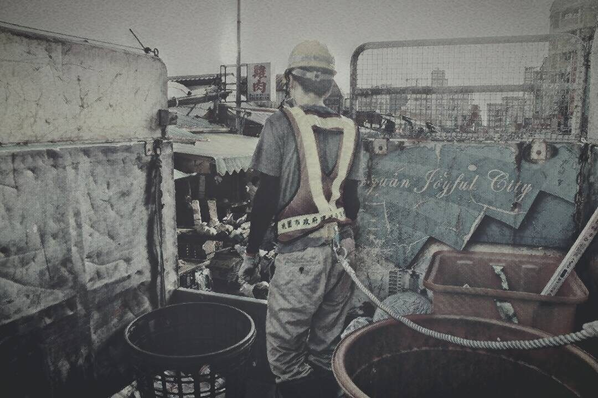

資源回收車上的人
2017-11-29

快來快來快來倒垃圾～
〈資源回收車上的人〉
把安全繩的掛勾扣上安全桿，他在搖晃的後車斗開始一天的工作。黃色安全帽扣著頭，活性碳口罩隔絕味道，視線剩下寬螢幕般的橫幅。
黃昏時分，天色漸暗，街道上的霓虹燈逐個亮起，耳熟能詳的樂曲開始唱了，少女祈禱一日的順利。
民眾提著各種瓶罐發出撞擊聲，快步往前趕上資源回收車。多數人不會把回收物上舉到車前，他一一彎低腰桿接過，附帶一句輕聲的謝。
他不只戴著手套，手腕上繫著一把美工刀，快速割袋或者拆紙箱，把易碎的燈管和玻璃瓶挑出來丟進大籮筐，其餘則往車內大臂一撒，幾秒鐘就完成一次工作，沿著樂聲，整路不斷重複進行著。後斗靠近車頭處堆積成一座小山。
偶有空檔，他扶站在車尾，瞇眼看著逐漸變小的招牌，人車來往的街道上散落一片暑熱。
一位氣喘吁吁的老伯追了上來，提的卻是一袋垃圾，「少年仔，垃圾車跑了，你幫我收一下。」「阿伯，這樣不行啦，這次我幫你倒，你下次要早一點出來等。」
他並沒有因此收到今天的第一句謝，老人把垃圾丟上車，繃著臉走了。
資源回收物夾雜各種垃圾堆成的小山，已經擴大到幾乎沒有他的立足之地，各種瓶罐流瀉的汁液，被柏油路上蒸騰的暑熱蒸出氣味來，彎月在路燈的盡頭露了臉。
還有好長一段路啊。
突然想起隊裡的資源回收桶收到的彈夾和手槍，不過是收到一袋垃圾，順手倒掉就好。倒掉就好。
整個城市，都是我的修羅場
故事柑仔店
與您共度加班時刻。